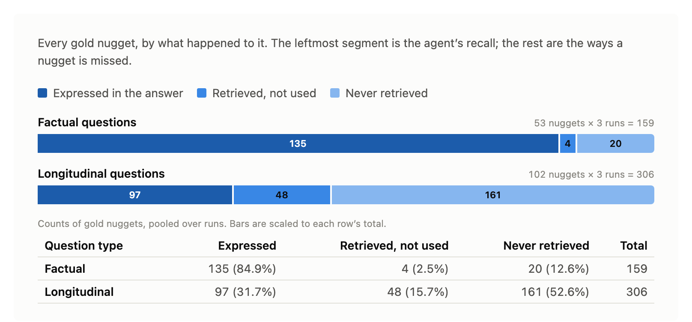

AnswerTrail: evaluating a deep-research agent over a bounded corpus
The previous article built AnswerTrail: a research agent that answers questions over one AI/LLM YouTube channel’s video transcripts, with every citation checked against the corpus. This article measures how well it answers.
AnswerTrail is scored on two kinds of question.
- A factual question asks for one specific fact, which usually sits in one place in the corpus.
- A longitudinal question asks how the creator’s view on a topic changed over time, which means gathering and connecting evidence spread across many videos and many months.
Plenty of write-ups show how to build a retrieval agent. Far fewer report what one actually scores, and fewer still say how much to trust the score. Most of this article is about how that measurement was built and checked:
- Data curation. 26,240 claims are extracted from the transcripts and composed into questions with their answers. The pipeline is semi-automatic: an LLM proposes at every stage, and a human adjudicates what survives. The result is 25 factual questions and 35 longitudinal questions, each carrying the facts its answer must state.
- LLM judge calibration. Scoring uses one LLM judge, drawn from a different model family than the agent it grades. It agrees with a human on 66 blind-labeled pairs at Cohen’s kappa 0.879.
How do you score a paragraph?
An answer from the agent is free text, often several paragraphs long, and there is no obvious way to put a number on prose. Marking the whole answer right or wrong throws away almost everything it says. Comparing it word by word against a reference answer scores the phrasing rather than the content.
A workable alternative is to decide in advance which individual facts a correct answer has to state, then check the answer for each one. Those facts are nuggets, the atomic units recall is scored against. A factual nugget is a single fact; a longitudinal nugget is a stance plus a time window.
Scoring this way comes from the AutoNuggetizer framework of (Pradeep et al. 2025), which the TREC 2024 RAG track used to evaluate long-form answers: list the nuggets a good answer should contain, then check the answer against each one. In AnswerTrail the nuggets are generated by an LLM and then adjudicated by a human.
Nuggets are not written from scratch. They are extracted from claims, and claims are extracted from chunks:
- A chunk is a fixed 30-second transcript window, the atomic unit the agent searches and cites. Its id is
video_id:start_second. - A claim is one atomic, faithful assertion a video makes, extracted from the transcript and tied to the chunk or chunks that state it. Its id is
video_id#cNNN, and the extractor also attaches short topic and entity tags. - A nugget is one atomic fact a correct answer must state.
From chunks to claims
Claims do double duty in the gold set. Every question is written from one or more claims, and every nugget is decomposed from a claim. For each video, the pipeline loads the video’s chunks in start-time order, renders them as a numbered list, and calls Sonnet 5 with thinking off and a claim-extraction prompt (snippet below). A single call produces, for each claim, its text, the chunk indices that support it, and its topic and entity tags.
Extract EVERY concrete claim, finding, number, result, comparison, or stated opinion...
For each claim, list in evidence_indices the indices of the chunk(s) that support it.
Never cite a chunk that does not state the claim.A real extracted claim, with the tags produced in the same call:
{ "claim_id": "-HjPWrKavyA#c016",
"text": "Claude 4.5 scored 77% on general finance in this study.",
"chunk_ids":["-HjPWrKavyA:00390", "-HjPWrKavyA:00420"],
"topics": ["FIRE benchmark", "model comparison"],
"entities": ["Claude 4.5"],
"confidence":"high" }Over the corpus this yields 26,240 claims, a median of 54 per video.
Factual gold: 25 questions, 53 nuggets
The factual tier asks for a single specific fact, so its gold is a small set of atomic facts per question, produced in four steps.
- Sampling videos over time. Order the 475 videos by date, split them into 5 equal bins of about 95, and draw 10 from each with a fixed seed. The 50 source videos then span the whole 16-month range instead of clustering on the channel’s busiest months.
- Composing questions from videos. The claims for all 475 videos already exist, so this step works from the sampled video’s claims. A cheap thinking-off Sonnet 5 call picks the 2 most question-worthy high-confidence ones, keeping one as primary and one as fallback. An adaptive-thinking call then writes a natural question from the primary claim.
- Human adjudication of the generated questions. A human vets each question against its claim and chunks. Questions get cut for containing their own answer, or for reading like something no real user would type: “In a paper’s worked example on agent matchmaking with a pool of 100 agents… which agent was identified as the best fit for subtask one, and what was its similarity score?”
- Extracting nuggets from claims. Every question that survived adjudication carries the source claim it was written from. A Sonnet 5 call decomposes that claim into the atomic facts an answer must state, omitting anything the question already gives away.
Adjudicating the 50 generated questions and their nuggets removed half of the questions, leaving 25 questions with 53 nuggets between them. One of them, with its source claim and the nuggets extracted from it:
question : Which universities published ReasonFlux, and when did the paper come out?
claim : The creator states that Princeton University and Peking University already
implemented this exact approach, publishing it on February 10th, 2025,
calling it ReasonFlux.
nuggets : fc-0001_n1 "ReasonFlux was published by Princeton University."
fc-0001_n2 "ReasonFlux was published by Peking University."
fc-0001_n3 "ReasonFlux was published on February 10th, 2025."Longitudinal gold: 35 questions, 102 nuggets
The longitudinal tier draws on the same claims, but a change of view never shows up in a single claim. So the gold is built from a topic’s claims tracked over time, again in four steps.
Building threads. A thread groups high-confidence claims that share a topic tag. A thread is kept only if it spans at least 3 videos and 90 days, which drops one-off topics and windows too short for a view to change. A stop-list removes generic tags like
benchmarksandmethodologyfirst. An example thread, on the topic of reinforcement learning, is shown below.### topic:reinforcement learning [videos=134, span=461d, claims=301] 2025-01-10 -> 2026-04-16 2025-01-10 [FR8oE8chp7c#c019] new data or RL approaches do not override the root-cause reasoning engine's outdated knowledge 2025-02-02 [bjktcqGxxac#c039] RL-tuned models like o1 and R1 are optimized for final-answer correctness, not reasoning ... (+299 more claims)Composing a question per thread. A thread holds many dated claims on one topic, and one adaptive-thinking Sonnet 5 call reads all of them. The call first rejects the thread if its claims never reflect a change of view over time, which removes about half of the 1,105 threads and leaves 505. For each thread that passes, it returns a question, 2 to 4 statements describing how the view changed, and 3 to 6 of the thread’s claims as dated evidence.
Human review of the generated questions. That automated check still lets through threads whose claims merely share a topic word, like several unrelated facts about RAG. A human reads all 505 and keeps the 35 whose claims show a real change of view over time.
Extracting nuggets from a thread’s claims. Not every fact in a thread becomes a nugget. The gold keeps only the facts that show how the view moved, the stance nuggets: where it started, each point where it turned, and where it ended.
The nuggets for one longitudinal question:
n1 He was optimistic about agentic AI's real-world capability and near-term
impact [early 2025]
n2 He tempered that view: on realistic evaluation, agentic performance was
weak [mid 2025]
n3 He concluded the anticipated agentic-AI revolution had stalled [early 2026]One judge, three metrics
With the gold built, the question is how the frozen agent scores against it. Scoring uses a single LLM judge that runs on a different model family, Claude Sonnet 5, from the OpenAI gpt-5.4 agent it grades, so the system never grades its own output. The judge always does the same thing: given a CLAIM and a TEXT, it decides HIT or MISS on whether the text supports the claim. A snippet of the judge prompt:
You decide whether a single CLAIM is supported by a given TEXT. Output a binary
verdict - HIT or MISS - and a one-sentence reason. There is no middle category...
Be strict about substance and lenient about wording. Do not reward a text that is
merely on the same topic; require that it actually supports the specific claim.Three metrics come out of that one judge, differing only in what is passed as the CLAIM and the TEXT:
| Metric | CLAIM | TEXT | What a HIT means |
|---|---|---|---|
| Recall | a gold nugget | the agent’s answer | the answer states something it should |
| Retrieval ceiling | a gold nugget | the chunks the agent retrieved | the evidence for that nugget was retrieved |
| Groundedness | an assertion extracted from the agent’s answer | the chunks the agent retrieved | that assertion is backed by the agent’s own evidence |
Recall and the retrieval ceiling both pass a gold nugget straight to the judge. Groundedness needs one step first, because the agent’s answer is prose rather than a list of assertions. A separate LLM call extracts the atomic assertions the answer makes, and each one becomes a CLAIM.
The retrieval ceiling is named for what it bounds: it is the highest recall the agent could reach from what its searches surfaced.
Can we trust the judge?
Every number rests on the judge’s verdicts, and an LLM judge is itself a fallible model, so before relying on it we calibrate it against a human. We draw 66 claim-text pairs and hand each to both the judge and a human, who each say HIT or MISS on whether the claim is supported by the text.
The pairs cover all three metrics: recall, retrieval, and groundedness. Each metric needs both clear hits and clear misses. Groundedness is almost always a hit, so we add a few constructed misses: one of the agent’s own claims paired with the chunks retrieved for a different, unrelated question, which cannot support it. The human labels all 66 blind, seeing only each claim and its text, with the judge’s verdict and reasoning hidden. Across the 66 pairs the judge called 36 hits and 30 misses, while the human labeled 32 hits and 34 misses.
The calibration score is Cohen’s kappa: how often the two agree, corrected for the agreement expected by chance, where \(p_o\) is the observed agreement and \(p_e\) the agreement expected if each labeled at its own hit and miss rate.
\[\kappa = \frac{p_o - p_e}{1 - p_e} = \frac{0.9394 - 0.4986}{1 - 0.4986} = 0.879\]
The two agreed on 62 of the 66 pairs, so \(p_o = 0.9394\), and the chance agreement implied by the two label distributions is \(p_e = \frac{36}{66}\cdot\frac{32}{66} + \frac{30}{66}\cdot\frac{34}{66} = 0.4986\). A kappa of 0.879 is high agreement, so the scores below reflect the agent’s behavior rather than the judge’s quirks.
The results
The main study is simple to state: run the frozen agent over every gold question and score each answer. The agent (gpt-5.4, reasoning effort low, dense pgvector retrieval, top-10 per search, up to 15 steps) answered each of the 25 factual and 35 longitudinal questions three times.

| Metric | Factual | Longitudinal |
|---|---|---|
| Recall | 84.9% | 31.7% |
| Retrieval ceiling | 86.8% | 43.5% |
| Groundedness | 96.4% | 98.0% |
Groundedness stays high on both tiers, so the low longitudinal score is not a case of the agent inventing content, and almost everything it asserts is backed by the chunks it retrieved.
Every figure here is pooled: a ratio of totals across all runs, rather than an average of per-question scores. The first two segments of a bar in the figure do not add up to the retrieval ceiling. For the longitudinal questions, 97 + 48 = 145 of 306 would be 47.4%, while the ceiling is 133 of 306, or 43.5%. The difference is 12 nuggets whose evidence was never retrieved but which the answer stated anyway, so they sit in the expressed segment while counting as not retrieved. The factual side has one such case, which is why 135 + 4 = 139 becomes a ceiling of 138 of 159.
The two tiers even work differently. A factual run took about 5 reasoning loops and about 4 searches, and surfaced about 19 chunks for synthesis. A longitudinal run worked harder, about 7 loops and about 9 searches, often firing several searches in one loop, and surfaced about 40 chunks.
Longitudinal questions are inherently harder to answer, so the lower score there is expected. A factual answer needs one fact that usually sits in one place, while a longitudinal answer has to find several stances spread across a year and then connect them.
What would move it
With a judge we can trust, we can perform two pre-registered ablations.
- Hybrid retrieval. Swap dense retrieval for dense plus BM25, fused with reciprocal rank fusion, on the longitudinal questions. The single hybrid run landed about 3 points below the dense baseline on both recall and the retrieval ceiling.
- No agent loop. Replace the ReAct loop with one dense retrieval on the raw question and one synthesis call. Recall falls from 84.9% to 79.2% on factual questions and from 31.7% to 23.5% on longitudinal ones, so looping and issuing several different queries is worth 5.7 and 8.2 points.
In short
The factual-versus-longitudinal gap, 85% against 32%, is dominantly a retrieval problem: evidence for barely 44% of what a trajectory answer must say is ever retrieved. A better ranker does not get past it. The agent’s reasoning is not the bottleneck. The next thing worth building is retrieval that can surface evidence spread thinly across time, which is a different problem from making the agent smarter.
Code companion
The bounded-deep-research repo has the evaluation code under eval/: the claim and nugget extraction, the judge, the calibration, and both ablations.